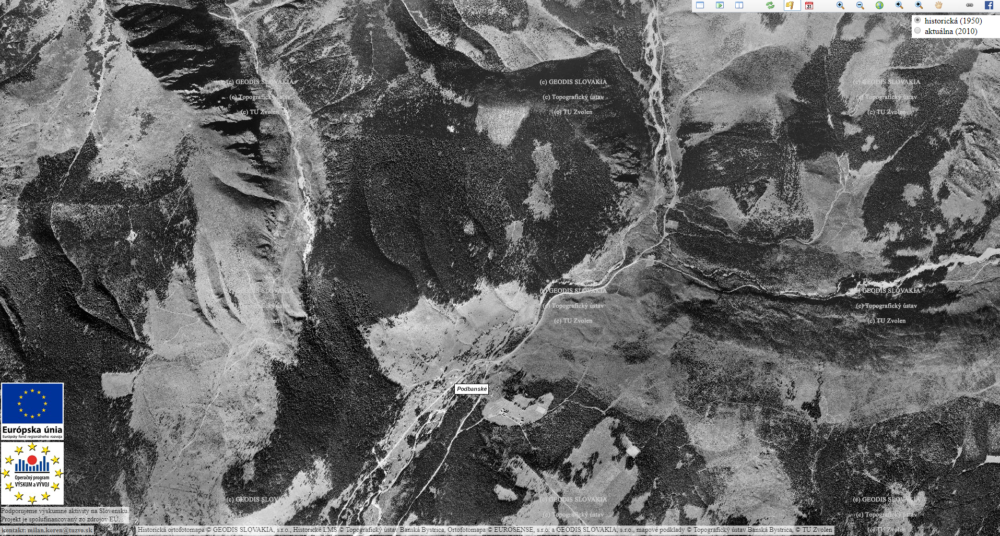

Porovnanie hranic lesa v r. 1950 vs. 2010
na základe archívnych máp TU ZVOLEN
Historická ortofotomapa © GEODIS SLOVAKIA, s.r.o., Historické LMS © Topografický ústav Banská Bystrica, Ortofotomapa © EUROSENSE, s.r.o. a GEODIS SLOVAKIA, s.r.o., mapové podklady © Topografický ústav Banská Bystrica, © TU Zvolen
